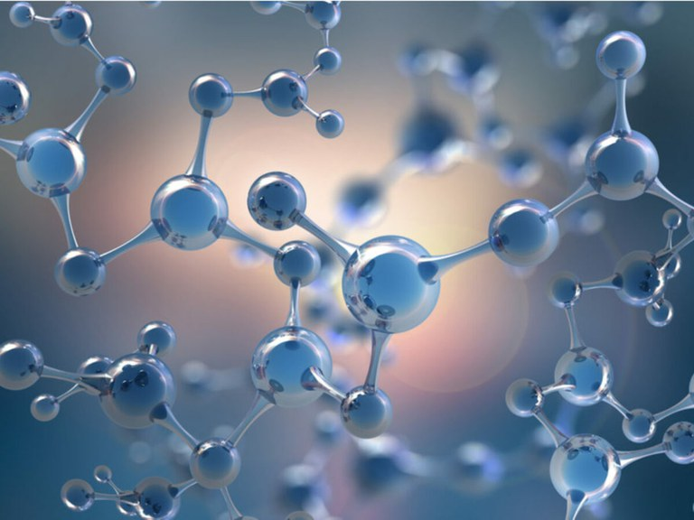

{kind=link}
{kind=link}
{kind=link}
{kind=link}
{kind=link}
{kind=link}
{kind=link}
{kind=link}
{kind=link}
{kind=link}
{kind=link}
{kind=link}

MCTI realiza reunião com INCTs de materiais avançados e nanotecnologia
Ministério e CNPq apoiam 17 institutos voltados a essas áreas do conhecimento.
Descubra o futuro da saúde com NanoHealth: a minúscula revolução da medicina!
O NanoHealth é o site que te ensinará tudo sobre a nanoescala que já vem transformando a medicina

Você já ouviu falar sobre a nanotecnologia? Se sim, provavelmente associa essa área a algo futurista ou até mesmo distante da realidade.
No entanto, o projeto NanoHealth veio para quebrar esses estereótipos e mostrar como a nanomedicina já está transformando a saúde de forma surpreendente.
O site tem como objetivo informar e ensinar sobre a nanoescala, apresentando os benefícios da implantação da nanotecnologia
na medicina. Além disso, ele está alinhado aos Objetivos de Desenvolvimento Sustentável (ODS), especialmente
Com uma abordagem informativa, o site traz conteúdos sobre a nanoescala em geral, depoimentos de especialistas e muito mais. Descubra como a nanotecnologia está revolucionando a saúde e prepare-se para se surpreender com tudo que a nanoescala tem a oferecer.


Em 2016, apontavam que o mercado da nanomedicina valia cerca de 134 bilhões de dólares.
De acordo com análises do Reports and Data, esse valor deve subir para mais de 430 milhões de dólares em 2028, um aumento de 320%.
A nanotecnologia não é coisa de outro universo ou fictícia, e muito menos, coisa de nerd! Ela já está presente em nossas vidas - no mundo real ;) - mas é desconhecida por muitas pessoas. Você é uma dessas pessoas e nunca ouviu falar sobre? O NanoHealth garante que você já viu a nanotecnologia em ação no Universo Marvel.
AssistaDescubra alguns exemplos de apliçações da nanotecnologia em áreas da medicina
A nanotecnologia na medicina tem um papel importante na área farmacêutica. A nanomedicina permite a criação de nanorobôs para o desenvolvimento de medicamentos. Além disso, os nanorobôs também podem transportar nanomateriais pelo corpo humano, levando o medicamento até o local necessário. Isso reduz os efeitos colaterais e aumenta os benefícios dos medicamentos.
Os nanorobôs são precisos no tratamento do câncer, reduzindo os efeitos colaterais nos pacientes. Diferentemente da quimioterapia e radioterapia, que afetam várias partes do corpo, os nanorobôs atuam diretamente nas células cancerígenas, alcançando áreas mais profundas sem a necessidade de métodos invasivos.
Devido ao seu tamanho, que é invisível a olho nu, a nanotecnologia na medicina possui microssondas, que ajudam na reparação de células e até mesmo de outros organismos vivos dentro da corrente sanguínea.
A nanotecnologia possibilita tratamentos médicos altamente direcionados, entregando medicamentos ou terapias diretamente aos órgãos-alvo, reduzindo efeitos colaterais e aumentando a eficácia dos tratamentos, como no tratamento de câncer, doenças cardiovasculares e neurológicas.
A nanoprata é um dos materiais que vêm sendo utilizados. Ela está presente em seringas, bisturis e em outros itens e impede que haja grande proliferação de microorganismos e, por conta disso, oferece mais segurança. Além disso, com equipamentos mais modernos e com a utilização da nanotecnologia, as cirurgias tornam-se menos invasivas, acelerando, por exemplo, a recuperação do paciente.
A nanotecnologia na medicina não apenas desenvolve remédios e tratamentos terapêuticos para os pacientes, mas também é responsável pelo Drug Delivery, que é essencial para transportar nanomateriais dentro do organismo. Os nanorobôs levam os medicamentos pelo corpo até o local correto, como no caso de um remédio para dor muscular.
Os nanomateriais podem ser utilizados para criar ferramentas de diagnóstico avançadas, como medidores ultra sensíveis de glicose no sangue, sensores ultra sensíveis de bactérias e ferramentas de triagem ultra sensíveis para detectar rapidamente patógenos. Outro exemplo é a tecnologia de Lab on a Chip ou Organ on a Chip, que permite fazer análises clínicas em um dispositivo com nano canais, possibilitando a análise rápida, precisa e de baixo custo de pequenas quantidades de material.
A criação de medicamentos e drogas medicinais são os principais alvos da nanotecnologia. Contudo, o desenvolvimento de drogas artificiais, que não dependam de elementos do nosso organismo são algumas das principais aplicações dessa ciência.
Quem disse que a nanomedicina não auxilia nos aparelhos médicos? Como exemplificamos um pouco acima, estudos na área já criaram nanomateriais, que substituem o uso de quimioterapia e radioterapia e que servem como novos equipamentos para quem trabalha na área da saúde.
Descubra falas de especialistas no assunto
Descubra os diversos benefícios da nanomedicina
Permitindo a detecção precoce de doenças com maior precisão e eficácia.
Possibilita tratamentos mais direcionadas e com menor potencial de efeitos colaterais.
Torna os procedimentos médicos mais eficientes e menos demorados.
Aumenta a confiabilidade e a precisão dos dispositivos usados.
Oferece dispositivos para monitorar a saúde de forma contínua.
Impulsiona descobertas que desafiam os limites da medicina tradicional.
Entrega de medicamentos específicos a células ou órgãos-alvo.
Permite terapias adaptadas ao perfil genético do paciente.
Diminui a toxicidade de tratamentos, tornando-os mais seguros.
Facilita a pesquisa e o desenvolvimento de novos tratamentos.
Potencial para tratamentos mais eficientes e menos invasivos, economizando recursos.
Conheça os integrantes do grupo que desenvolveram o projeto
As suas dúvidas podem ser as mesmas de outras pessoas! Tire as suas aqui com as perguntas frequentes.
Veja as últimas notícias sobre o mundo nano! Você pode acessar todas as notícias disponíveis em nosso site atráves do atalho no menu
Ministério e CNPq apoiam 17 institutos voltados a essas áreas do conhecimento.
Empresas que trabalham com nanotecnologia no Brasil serão incentivadas em suas produções...
Uma pesquisadora do Grupo de Nanomedicina e Nanotoxicologia da...
Se você tiver alguma pergunta, comentário ou solicitação, não hesite em entrar em contato conosco.
nanohealth@example.com
+1 5589 55488 55
Gostou ou tem sugestões? Não deixe de avaliar nosso projeto, sua resposta será de grande importância para o grupo!